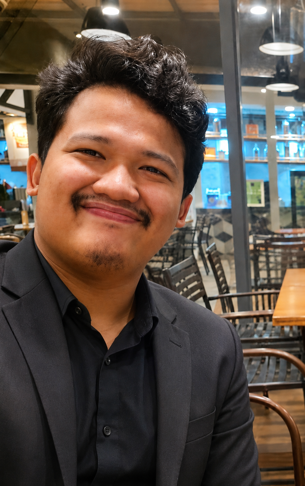

6
Clean Water
and Sanitation
and Sanitation
Water Resources
Hydrology, rainfall-runoff analysis, watershed modelling, flood assessment, and water-system planning.


Our expertise is aligned with selected Sustainable Development Goals by supporting clean water systems, renewable energy development, resilient infrastructure, safer communities, and climate adaptation.
Hydrology, rainfall-runoff analysis, watershed modelling, flood assessment, and water-system planning.

Hydropower support, pumped-storage assessment, wind-flow analysis, and wind energy site support.

Hydraulic modelling for rivers, dams, spillways, drainage, scouring, sediment movement, and engineering structures.

Flood risk analysis, coastal inundation, tsunami-related modelling, and hazard assessment for safer living environments.

Climate risk analysis, extreme rainfall assessment, flood response studies, and adaptation-oriented technical support.
Water, sediment, waves, climate, and environmental flow processes directly influence infrastructure performance, disaster risk, and long-term sustainability. Through numerical modelling, field-based analysis, and engineering assessment, EFSRG investigates these interconnected processes to support safer infrastructure and better environmental decision-making.
Selected NOAA visualizations showing tsunami propagation, coastal hazards, and monitoring systems that connect real-world events with engineering analysis.
NOAA PMEL visualization of tsunami propagation following the April 1, 2026 Ternate event.
Source: NOAA Pacific Marine Environmental LaboratoryPropagation of the tsunami generated by the January 15, 2022 Hunga Tonga volcanic eruption.
Source: NOAA Pacific Marine Environmental LaboratoryNumerical visualization of tsunami propagation following the December 5, 2024 Cape Mendocino event.
Source: NOAA Pacific Marine Environmental LaboratoryAn introduction to deep-ocean tsunami monitoring technology used to support forecasting and warning systems.
Source: NOAA Pacific Marine Environmental LaboratoryAn exhilarating knowledge-sharing session with participants from diverse countries! Exchanging ideas and experiences broadened our perspective, challenged the way we think, and highlighted the value of learning from different cultures and backgrounds. Truly an inspiring and encouraging experience.


